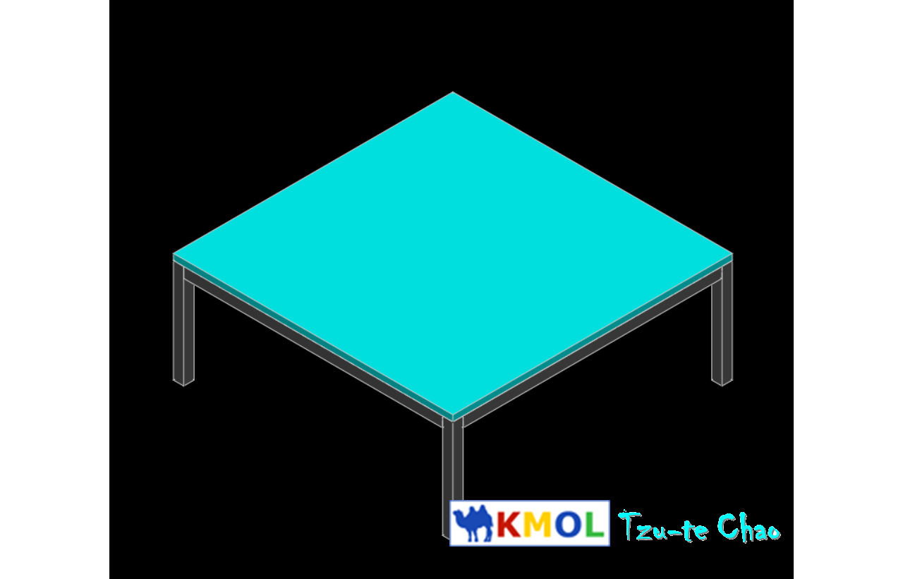

Week <<
Previous Next >> week6-9
week2-5
Week-2
第二週練習影片:
1.先將USB格式化為exFat(單一檔案大小上限可達64ZB)
2.將2019Fall可攜套件.7z下在至USB內並進行解壓縮
3.進入Github ，創建一個新的倉儲,並命名為''cad2019''
4.git clone至自身的USB
5.並進行身分輸入:
git config --global user.name "s40723242"
git config --global user.email "40723242@gm.nfu.edu.tw"
git config --global http.proxy [2001:288:6004:17:7]:3128
6.git submodule add https://github.com/mdecourse/cmsimde.git cmsimde
7.下載附件 python -m pip install flask_cors
8.進入 cmsimde 輸入 python wsgi.py 編輯頁面
9.編輯完進入靜態網頁，退到cad2019推上Github
如何推上? git add . ⇒ git commit -m "名稱" ⇒ git push
10.完成
Week-3
第三週練習影片:
進行Solvespace 編譯
1.將 Y:\portablegit\bin\sh.exe 改名為 sh_rename_for_solvespace.exe
2.查驗 git 版本是否在"2.13以上"
3.git clone --recurse-submodules https://github.com/solvespace/solvespace.git solvespace(務必在網路穩定地方下進行下載)
4.編輯Y:\tmp\solvespace\extlib\angle\CMakeLists.txt 開啟後將第713行及714行前方加上"#"
5.將 libpng.dll.a 的編譯，改名為 libpng_static.a, 並放到編譯系統的 lib 目錄中
6. cd solvespace >cd extlib >cd libpng >mkdir build > cd build
7.輸入cmake .. -G "MinGW Makefiles" -DCMAKE_BUILD_TYPE=Release
8.輸入mingw32-make > 退到solvespace > mkdir build > cd build
9.在執行一次cmake .. -G "MinGW Makefiles" -DCMAKE_BUILD_TYPE=Release
10.在輸入mingw32-make > Done
Week-4
1.本週自行編輯網站，編輯自身影片加上字幕並加上浮水印.
錄影:Sharex
字幕:aegisub . arctime
整合:avidemux
浮水印:
Week-5
solvespace繪製練習-Solvespace Tutorial 4 - Assembly
1-建立一個20X20的方形(快捷鍵R)，分別擠出長500的桌框及200的桌腳(Shift+x)，個別另存新檔，成為個別的零件.
2-將桌框及桌腳利用方位變換(快捷鍵x)及結點接合(快捷鍵o)，組起桌架.
3-在建立一個540X540的方形(快捷鍵R)，分別擠出寬12的桌面(Shift+x)另存新檔.
4-將桌面跟桌架合併.(快捷鍵x)及(快捷鍵o)
完成圖:

操作影片:
使用快捷鍵:
Sketch:
rectangle-R
Constrain:
lengh -D
equal length/radius/angle-Q
point on line/curve/plane/point-O
normals in same direction-X
New group:
extrude -Shift+X
linking/assembling file-Shift+I
Perspective:
nearest isometric view -F3
align view to workplane-W
操作影片:
2.閱讀手冊熟悉solvespace reference
3.將自評及互評填寫完畢課程評量表單
Week <<
Previous Next >> week6-9